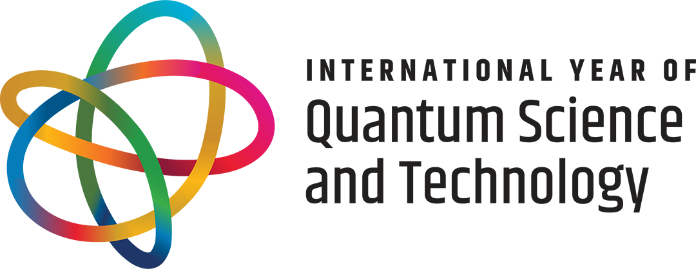

1st ACM SIGSPATIAL International Workshop on Quantum Computing and Quantum-Inspired Technologies for Spatial Data Systems and Applications
(Q-Spatial 2025)
To be held with the 33rd ACM SIGSPATIAL 2025 in Minneapolis, Minnesota, USA
Held with
 Important Dates
|
Welcome to Q-Spatial 2025The 1st ACM SIGSPATIAL International Workshop on Quantum Computing and Quantum-Inspired Technologies for Spatial Data Systems and Applications UpdatesTo be announced. AbstractThe 1st ACM SIGSPATIAL International Workshop on Quantum Computing and Quantum-Inspired Technology for Spatial Data Systems and Applications (Q-Spatial 2025) is to be co-located with the 33rd ACM SIGSPATIAL International Conference on Advances in Geographic Information Systems (ACM SIGSPATIAL 2025). Workshop DescriptionQuantum computing and other quantum-driven technologies have been a field of technology investment for decades. With promising potential, significant investments from many governmental and industrial parties are poured into winning the race. We strongly believe it is time for the SIGSPATIAL community to build capacity in that promising technology field. This workshop is intended to bring together the SIGSPATIAL community members interested in exploring quantum technologies in spatial systems and applications. The workshop will be open for all levels of expertise, either to contribute or to learn. Workshop Goals and VisionThe high-level philosophy of organizing this workshop is engaging, motivating, encouraging, and helping interested SIGSPATIAL community members to explore spatial problems that could take advantage of quantum computing. This breaks down into two goals:
The International Year of Quantum 2025On June 7, 2024, the United Nations General Assembly officially declared 2025 "The International Year of Quantum Science and Technology". Organizing this workshop will be part of the global community efforts to raise awareness about quantum computing technologies and their impact in the context of spatial data. Workshop Organizers
Workshop AttendantsWe are pleased to welcome the following distinguished attendees to Q-Spatial 2025:
This list will be updated as more attendees confirm their participation in the workshop. Call for Lightning TalksWe invite proposals for short lighting talks in the context of quantum spatial applications and systems. This call is open to everyone interested in sharing their work, ideas, or vision. Submission GuidelinesDetails on the format and submission procedure for lightning talks will be announced soon. Please check back for updates. Topics of InterestWe welcome lightning talks on (but not limited to) the following topics:
Important Dates
Workshop ProgramBelow is our proposed schedule for the Q-Spatial 2025 workshop. The program is designed to provide both introductory material for newcomers and advanced content for experienced researchers.
Registration InformationRegistration for the Q-Spatial 2025 workshop will be handled through the main conference registration system. How to RegisterPlease visit the ACM SIGSPATIAL 2025 Conference Website for details on registration fees and procedures. Registration Categories
Student DiscountsSpecial student registration rates are available. Students must provide valid proof of enrollment when registering. Contact InformationFor any registration-related questions, please contact the conference organizers through the main SIGSPATIAL 2025 website. |
||||||||||||||||||||||||||||